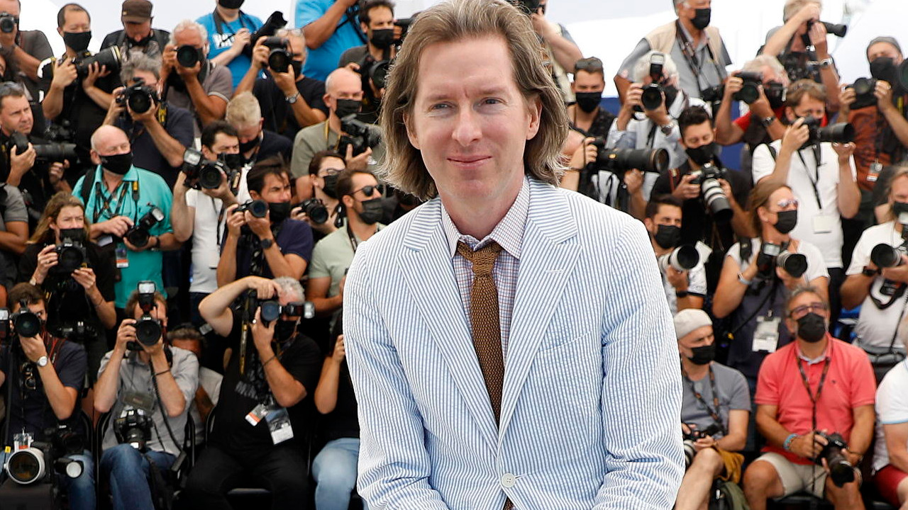

Wesley Wales Anderson, noto semplicemente come Wes Anderson, nasce il 1º maggio 1969 a Houston, Texas. Cresce in una famiglia agiata ma presto segnata dal divorzio dei genitori, evento che influenzerà profondamente le tematiche ricorrenti delle sue opere: la disgregazione familiare, la nostalgia e il desiderio di ordine in un mondo caotico.
Sin da giovane è appassionato di cinema e arte. Studia filosofia alla University of Texas ad Austin, dove conosce Owen Wilson, con cui stringe un sodalizio artistico duraturo. Insieme scrivono il cortometraggio Bottle Rocket (1994), che si trasformerà presto in un lungometraggio (1996) prodotto da James L. Brooks e distribuito dalla Columbia Pictures. Nonostante il debutto poco fortunato al botteghino, il film viene accolto con entusiasmo dalla critica, segnando l’inizio della sua carriera.
Il vero successo arriva con il secondo film, Rushmore (1998), una commedia agrodolce che consolida il suo stile visivo: inquadrature simmetriche, musica vintage, colori pastello e una narrazione poetica e surreale. Nel 2001 raggiunge la notorietà internazionale con The Royal Tenenbaums (I Tenenbaum), che ottiene una nomination all’Oscar per la miglior sceneggiatura originale.
Negli anni successivi, Anderson amplia il proprio universo cinematografico con opere sempre più mature e complesse, tra cui The Life Aquatic with Steve Zissou (2004), The Darjeeling Limited (2007) e Fantastic Mr. Fox (2009), il suo primo film d’animazione in stop-motion, tratto dal romanzo per ragazzi di Roald Dahl. Quest'ultimo riceve il plauso della critica e una nomination all’Oscar.
Il suo capolavoro riconosciuto a livello globale è The Grand Budapest Hotel (2014), una commedia visiva ambientata in un’Europa immaginaria tra le due guerre mondiali. Il film è un trionfo stilistico e narrativo, vincendo 4 premi Oscar (su 9 nomination) e 5 BAFTA Awards, oltre al Gran Premio della Giuria al Festival di Berlino. Il protagonista, M. Gustave, interpretato magistralmente da Ralph Fiennes, incarna perfettamente l’universo andersoniano: raffinato, malinconico e irresistibilmente eccentrico.
Nel 2018 torna all’animazione con Isle of Dogs, un altro film in stop-motion acclamato dalla critica, ambientato in un futuro distopico in Giappone. Nel 2021 presenta The French Dispatch, una lettera d’amore al giornalismo cartaceo e alla Francia del Novecento, mentre nel 2023 partecipa al Festival di Cannes con Asteroid City, una riflessione meta-cinematografica su arte, scienza e alienazione.
Oltre ai film, Wes Anderson ha diretto cortometraggi, spot pubblicitari (per H&M, Prada, American Express), videoclip musicali, e si è distinto per la coerenza stilistica in ogni sua opera. La sua estetica è immediatamente riconoscibile: scenografie teatrali, personaggi in posa frontale, carrellate millimetriche, e una palette cromatica studiata con precisione maniacale.
Il suo lavoro ha influenzato non solo il cinema indipendente, ma anche il mondo della moda, del design e della fotografia. Spesso paragonato a un illustratore che dipinge con la macchina da presa, Wes Anderson è oggi considerato uno degli autori più originali e distintivi del cinema contemporaneo.